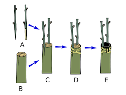
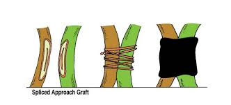
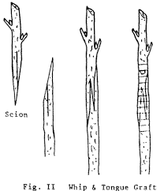

There are two types of vegetative propagation, natural and artificial vegetative propagation.
Artificial vegetative propagation is of three types, stem cutting, layering and grafting
Grafting is yet again of three types, cleft grafting, approach grafting, and whip or tongue grafting. Here are their respective images.
Vegetative propagation is preferred over normal sexual reproduction as it is quicker and more certain, way for infertile plants to reproduce and production of plants with same qualities as parent
It is not favored in some cases as they do not produce new varieties, and may lead to overcrowding near parent plant
Now that you have refreshed your knowledge, lets have a question answer session!!